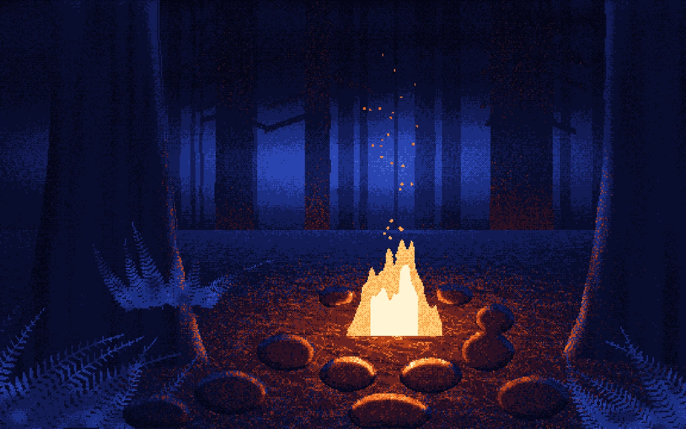

Interactive Animations
Code · WebGL · Rive
Interactive and code animation. Every piece on this page runs live: it responds to cursor, touch or voice, driven by code, a shader or a state machine instead of a timeline.
The Art of Waiting // Loading
A gallery of loaders with personalities: rings that come undone, planets that almost align, a burner that turns down as you lean in. Drawn live in WebGL.
 Try it
Try it
Eight loaders, each one reacts to the cursor
Nightshade
Visual tests for a small murder-mystery game: twelve night scenes drawn, lit and animated in code. In progress.

Try itOne of twelve scenes
Squish Stack
Interactive physics toy built in Rive: idle breathing, pokeable blocks, hover sway, constraint-linked stack, and a triple-poke topple + rebuild driven entirely by the state machine.
Poke it
Dewy
A face yoga and skincare app: illustration, interface and motion, running as a working web app.
Notch Voice Assistant
The voice assistant orb for Notch's AI agents, rendered live with WebGL. A short version here; the full process is in the case study.
Golden Strings
A WebGL shader. Streaks of prism light on a dark ground, crossing toward a soft glow. They sway like cords in a light wind. Moving the cursor stirs up a gust and lights up the strings it passes over; a click or tap sends a slow wave through them that shifts the colours.
Move and click